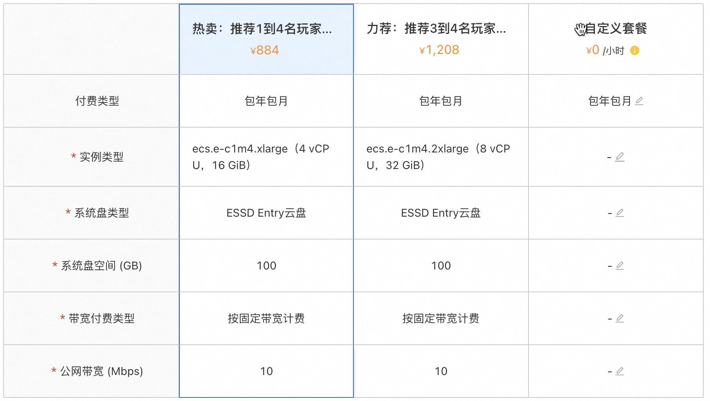
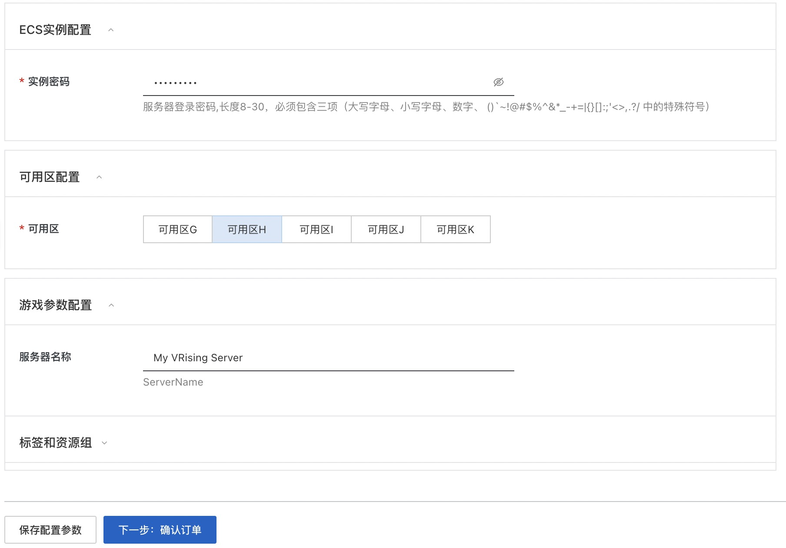
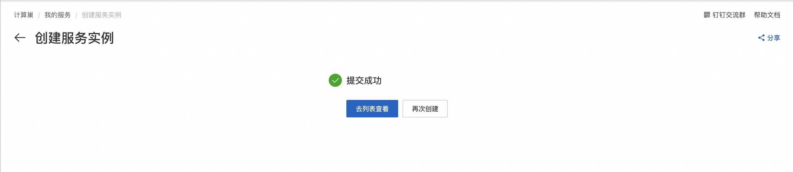
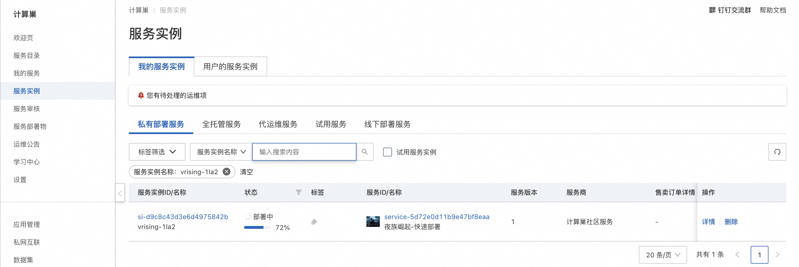
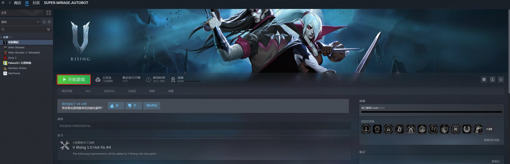
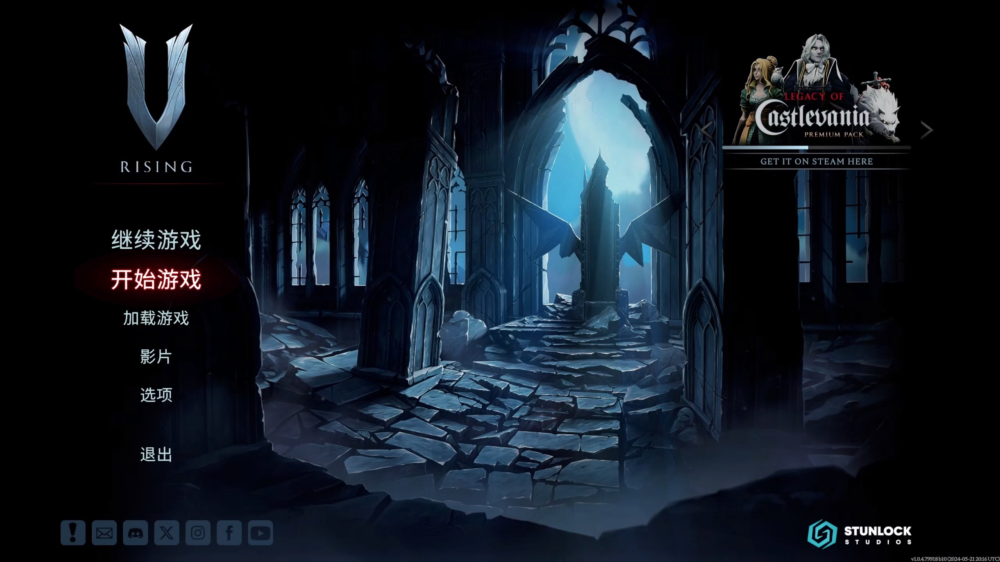
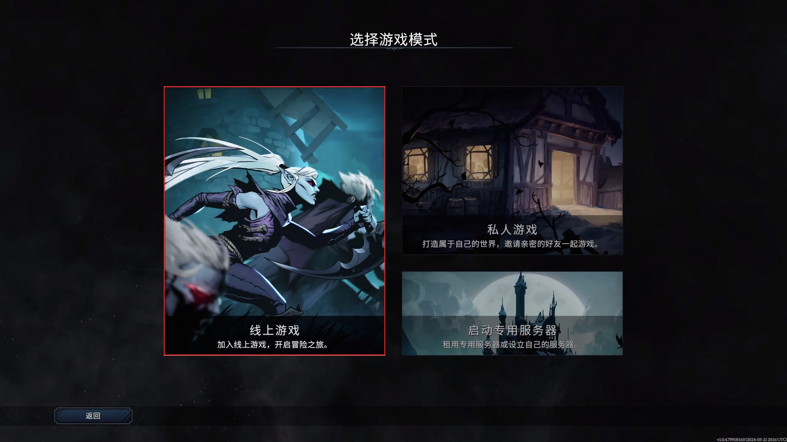
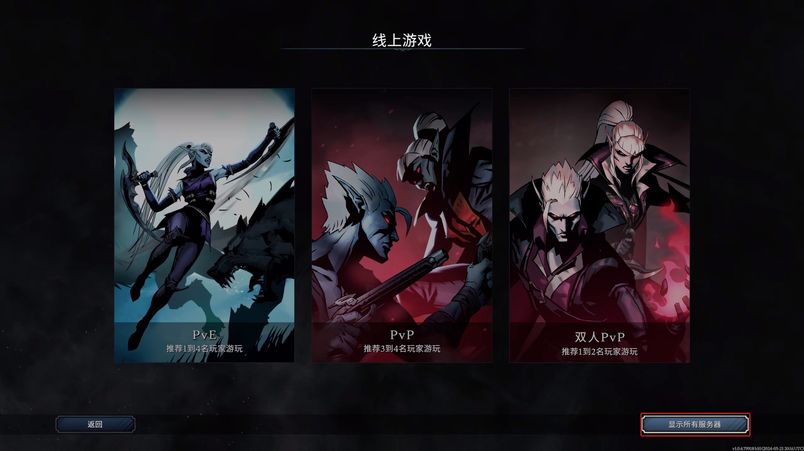
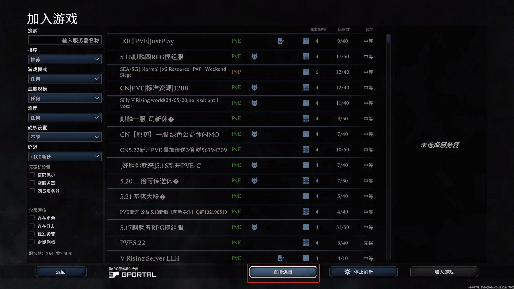
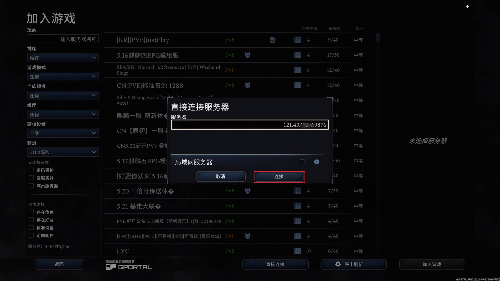

3分钟部署夜族崛起联机服务
概述
《夜族崛起》是Stunlock Studios制作发行的一款大型多人在线的动作冒险游戏，以哥特风格的开放世界展开，玩家将扮演一名刚醒来的虚弱吸血鬼，寻找血液以恢复体力，同时躲避烈日以求生存。重建城堡和吸血鬼帝国，将人类变成忠诚的仆人。2024年5月8日，《夜族崛起》1.0完整版正式上线Steam平台。
计费说明
夜族崛起联机服务在计算巢上的费用主要涉及：所选vCPU与内存规格、磁盘容量、公网带宽 计费方式包括：包年包月、按量付费（小时） 预估费用在创建实例时可实时看到。
创建云服务器
第一步：选择配置
- 服务实例名称（如无特殊要求，保持默认即可）；
- 选择部署地域（可以选择离自己最近的城市，如无特殊要求，保持默认即可）；
- 选择配置:
| 套餐名 | 说明 |
|---|---|
| 推荐1到4个玩家游玩 | 4核16G，10M带宽不限流量 |
| 推荐3到4个玩家游玩 | 8核32G，10M带宽不限流量 |
| 自定义套餐 | 可自由选择ECS配置（所选规格的内存至少16G），适合高阶DIY玩家 |
|  |
- 配置服务器密码和 可用区（如无特殊要求，保持默认即可）。
- 配置游戏参数，配置完成之后，点击下一步，确认提交订单。 
第二步：创建服务
- 在服务确认页面，勾选同意服务条款，点击“立即创建”，后面就是付款流程。
- 当出现提交成功提示，说明服务已经开始创建，点击“去列表查看”，可以看到服务正在部署中。 
第三步：进入实例详情
- 服务不到1分钟即可完成创建，当服务的状态变成“已部署”，点击服务实例ID进入服务详情。 
- 到这一步的时候，夜族崛起的服务端安装程序已经预置在服务的镜像里了，无需手动复制，非常方便。
- 看到“夜族崛起服务器地址端口”，这就是你搭建服务器的IP地址了，复制这个地址用于下一步操作。

登录游戏
前置条件：已经在steam平台购买并安装夜族崛起。
-
登录您的steam账号并开始游戏。 
-
进入游戏后点击开始游戏。 
-
选择线上游戏。 
-
显示所有服务器。 
-
直接连接服务器。 
-
粘贴上文生成的服务器地址端口并连接。 
-
等待游戏加载完成即可畅玩啦。

© 2009-2022 Aliyun.com 版权所有